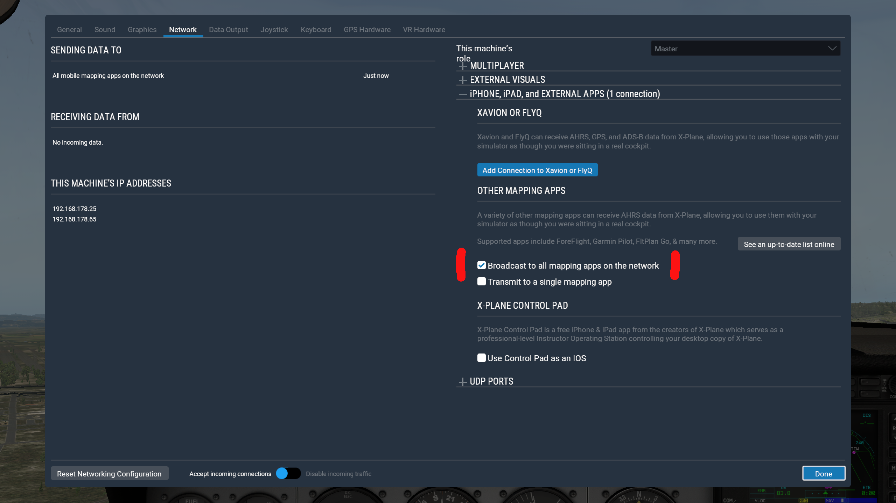

Connect Your Flight Simulator
Enroute Flight Navigation can connect to flight simulator software. When setup correctly, position and traffic information is sent from the flight simulator via Wi-Fi to the device that runs Enroute Flight Navigation.
The author has tested Enroute Flight Navigation with the following flight simulator programs.
X-Plane 11 for desktop computers
Users have reported success with the following programs.
Aerofly FS, Version 2 and 4 for desktop computers
X-Plane, Versions 10, 11 and 12 for desktop computers
Please contact us if you are aware of other programs that also work.
Note
Enroute Flight Navigation treats flight simulators as traffic receivers. To see the connection status, open the main menu and navigate to the “Information” menu.
Before You Connect
This manual assumes a typical home setup, where both the computer that runs the flight simulator and the device that runs Enroute Flight Navigation are connected to a Wi-Fi network deployed by a home router. Make sure that the following conditions are met.
Open the “Settings” page in the main menu and tap on the entry “Primary position data source” and select the “Traffic data receiver” as the main source. As long as the built-in satnav receiver is selected, all position information provided by your flight simulator is ignored.
The computer that runs the flight simulator and the device that runs Enroute Flight Navigation are connected to the same Wi-Fi network. Some routers deploy two networks, often called “main network” and a “guest network”.
Make sure that the router allows data transfer between the devices in the Wi-Fi network. Some routers have “security settings” that disallow data transfer between the devices in the “guest network”
Set Up Your Flight Simulator
Your flight simulation software needs to broadcast position and traffic information over the Wi-Fi network. Once this is done, there is no further setup required. As soon as the flight simulator starts to broadcast information over the Wi-Fi network, the moving map of Enroute Flight Navigation will adjust accordingly. To end the connection to the flight simulator, simply leave the flight simulator’s Wi-Fi network.
Aerofly FS
Aerofly works well with Enroute Flight Navigation if the program is set to broadcast flight information via the network. Open the menu “Miscellaneous settings”, activate the option “Broadcast flight info to IP address” and enter the correct „Broadcast IP address“. The figure Aerofly Miscellaneous settings and shows the settings that work for one of our users.
{kind=link}
Aerofly settings
{kind=link}
Aerofly Miscellaneous settings
FlightGear
FlightGear works well, even though position information is only broadcast when the simulated aircraft is moving. Follow the instructions on this website to configure FlightGear. Enroute Flight Navigation will then work automatically, without any specific configuration.
MS Flight Simulator
In order to communicate with other programs, the MS Flight Simulator requires additional software. Users reported that Enroute Flight Navigation works well with the following EFB-connector programs.
fs2ff (free, open source)
XMapsy Essential (commercial, inexpensive, does not provide barometric altitude data).
XMapsy V3 (commercial, more expensive, provides barometric altitude data).
The web site of the commerical EFB program ForeFlight lists additional EFB-connector programs that might also work.
Note
In MSFS2020 cold and dark mode, traffic in the air will not been shown. You have to power on the avionics!
Note
At the time of writing (04Aug21), the MS Flight Simulator reports only traffic that has a tail number. This is likely due to a bug in the MS Flight Simulator software.
fs2ff
The program fs2ff does not require any complicated installation or setup, just download and run. The latest release of fs2ff can be downloaded here. Detailed instruction are found here. The figure fs2ff Settings shows extremely simple settings window.
{kind=link}
fs2ff Settings
XMapsy Essential
If you use XMapsy Essential, you need not to set up anything. Just start XMapsy Essential and start MSFS2020. The broadcast address will be setup automatically. The figure XMapsy Essential Settings shows the settings.
{kind=link}
XMapsy Essential Settings
XMapsy V3
If you use XMapsy V3, set the “Message-Format” to “ADS-B/GDL90” and the “Preferred Technology” to “SIMCONNECT”. To receive the correct altitude, be sure to check the box “GDL90 ownship geometric altitudes based on MSL”. The figure XMapsy V3 Settings shows verified XMapsy V3 settings for proper work with MSFS2020. The Broadcast address will be determined by XMapsy and should not be touched except you have extended network configuration experience.
{kind=link}
XMapsy V3 Settings
X-Plane 11
Open the “Settings” window and choose the “Network” tab. Locate the settings group “This machine’s role” on the right-hand side of the tab. Open the section “iPhone, iPad, and external apps” and select the item “Broadcast to all mapping apps on the network” under the headline “other mapping apps”.
Other Programs
The flight simulator needs to be set up to send UDP datagrams in one of the standard formats “GDL90” or “XGPS” to ports 4000 or 49002. Given the choice, GDL90 is generally the preferred format.
Troubleshooting
Enroute Flight Navigation treats flight simulators as traffic receivers. To see the connection status, open the main menu and navigate to the “Information” menu. If the entry “Traffic Receiver” is highlighted in green, then Enroute Flight Navigation has already found the program in the network and has connected to it. If not, then select the entry. The “Traffic Receiver Status” page will open, which explains the connection status in more detail.